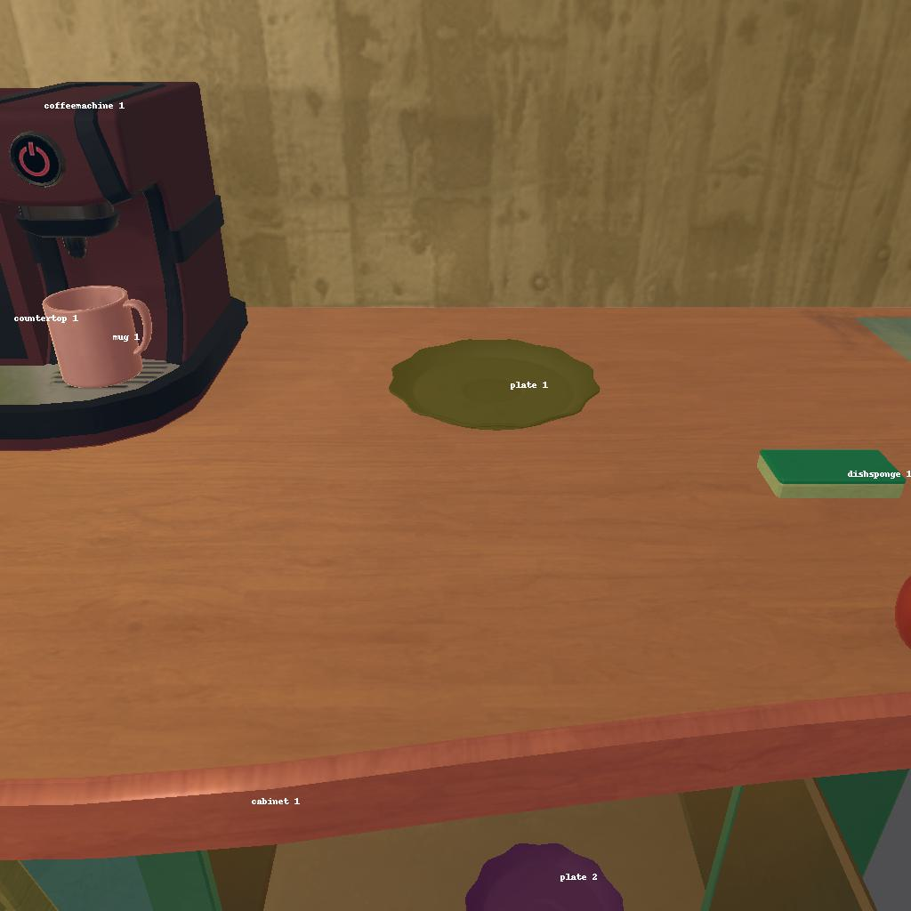

---------------------------------------------------------task: 26---------------------------------------------------------
--------------------------------------------------------------------------------------------------------------------------------------------------------------------
--------------------------------------------------------------------------------------------------------------------------------------------------------------------
Step:--------------------------------------------------------------------------10-------------------------------------------------------------------------------
----------------------------------------
VLM Prompt:
Image1:
**Instruction**
1. Analyze the provided image to identify all visible household objects, focusing on those relevant to the task description "find two kettle and put them in cabinet."
2. Use the analysis of the image and the task hint "The agent must find an object of the desired type, pick it up, find the correct location to place it, put it down there, then look for another object of the desired type, pick it up, return to previous location, and put it down there with the other object." to answer the question: what is the most reasonable action in the choices for the task description "find two kettle and put them in cabinet"?
4. Decide and write the answer using the template: The answer is: (i): , where i is the real number. If there is no desired object in the image, search every place based on **Initial Observation** to find the object. And if no one is exactly correct, choose a similar answer.
**Initial Observation**
You are in the middle of a room. Looking quickly around you, you can see countertop (1), coffeemachine (1), cabinet (1-4), drawer (1-8), sink (1), sinkbasin (1), garbagecan (1), fridge (1), microwave (1), dresser (1), sidetable (1)
**Answer Choices**
(1): go to coffeemachine 1
(2): go to cabinet 2
(3): go to drawer 1
(4): go to sink 1
(5): go to sinkbasin 1
(6): go to cabinet 3
(7): go to garbagecan 1
(8): go to cabinet 4
(9): go to drawer 2
(10): go to fridge 1
(11): go to microwave 1
(12): go to dresser 1
(13): go to sidetable 1
(14): go to drawer 3
(15): go to drawer 4
(16): go to drawer 5
(17): go to drawer 6
(18): go to drawer 7
(19): go to drawer 8
(20): close cabinet 1
(21): take plate 1 from cabinet 1
(22): take mug 1 from cabinet 1
(23): take plate 2 from cabinet 1
(24): take dishsponge 1 from cabinet 1
(25): take tomato 1 from cabinet 1
(26): examine cabinet 1
**Answer**
Let's think step by step by following the instructions.
----------------------------------------
----------------------------------------
Original Response:
The task is to find two kettles and put them in the cabinet. From the image provided, there are no kettles visible. Therefore, we must search every place based on the initial observation to find the object.
Looking at the answer choices, there are multiple cabinets listed (1-4). Since kettles are not typically stored in drawers, the sink, the garbage can, the fridge, the microwave, the dresser, or the side table, we can eliminate those options. The coffeemachine is not a kettle, so we can eliminate that option as well.
From the remaining options, we have four cabinets to choose from. Since the task is to put the kettles in a cabinet and not to take anything out, we can eliminate the actions that involve taking items from the cabinet. We are left with the actions to go to the different cabinets.
Considering that cabinets are a reasonable place to find kettles, the most reasonable actions would be to check each cabinet. The instruction does not specify which cabinet to check first, so any of the "go to cabinet" actions could be correct. However, since "cabinet 1" is mentioned in the initial observation and we have an option to close cabinet 1 (which implies it is open and we may have a better view inside), we can start with cabinet 1.
The answer is: (20): close cabinet 1. Since we have to find the kettles first, closing the cabinet will give us a view if there are any kettles inside or not, and then we can proceed to check other cabinets if needed.
----------------------------------------
----------------------------------------
>>> Refine Original VLM Response and Get Pure Action: close cabinet 1
----------------------------------------
-----------------------------------------------------------------
Running time: 14.933555364608765 seconds
Total Money: 9.460690000000007
-----------------------------------------------------------------
-----------------------------------------------------------------
Text Observation:You close the cabinet 1.
-----------------------------------------------------------------
UNSUCCEED